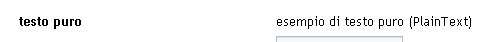

UI Widgets - scheda del widget [ PlainText]
PlainText]
In questa scheda è descritto il widget PlainText, in termini di:
- riferimento alla documentazione di dettaglio dell'elemento del metamodello utilizzabile durante la modellazione
- uno o più snapshot che rappresentano graficamente il widget
- una descrizione del widget che ne descrive l'utilizzo e le possibili varianti
- elenco degli eventi gestibili (implicitamente o esplicitamente) relativamente al widget
Identificativo e riferimenti di dettaglio
La documentazione metamodeldoc di dettaglio del widget PlainText è disponibile
qui.
Descrizione
E' un widget di visualizzazione di dati testuali.
Il widget completo prevede una label ed il campo di visualizzazione associato, che
è semplicemente il testo corrispondente al valore associato al widget
(da qui il nome di PlainText).
La label può essere, in casi particolari, vuota.
Il TextField può essere utilizzato all'interno di:
- WidgetsPanel, con layout Verticale, Orizzontale, Griglia
- DialogPanel, per la visualizzazione del testo del dialog
Prevede due modalità di funzionamento, una standard ed una
ricca.
modalità standard
Il funzionamento di base del PlainText prevede:
- la possibilità di essere reso invisibile a comando
- la possibilità di essere invisibile a fronte di regole associate al profilo dell'utente
collegato
modalità ricca
La modalità ricca prevede di default i seguenti comportamenti aggiuntivi:
- tooltip al passaggio del cursore sulla label del widget
Immagini esemplificative

fig.1 - esempio di rendering grafico del widget
Eventi associati al widget